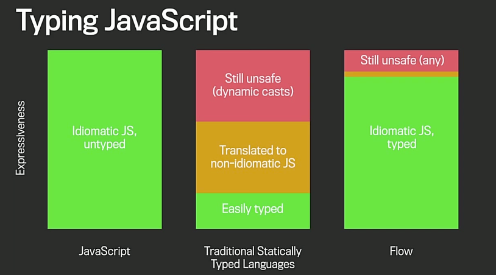

Unternehmenskritische Anwendungen mit JavaScript
Oliver Zeigermann / @DJCordhose
Online-Version: http://djcordhose.github.io/serious-javascript/slides/wjax.html
Das machen wir mit JavaScript!
Typische Reaktionen
Die hacken das also irgendwie hin
Wohl, weil das nicht mit CSS geht
Und nächstes Jahr schreiben die das noch mal neu - in richtig
Wir machen das nicht mit JavaScript, sondern mit Angular.js
Browser als Zielplattform? Schlimm!
Mit JavaScript kann man nichts richtiges entwickeln
JavaScript-Programmierer? Das ist wie HTML-Programmierer!
Viel Spaß beim Refactoren!
JavaScript und Java? Zwei Sprachen in einem Projekt?
Dieser Vortrag klärt über die Missverständnisse auf, die hinter diesen Reaktionen stecken
Oliver Zeigermann

Herausforderungen beim Einsatz von JavaScript
- Wo kann ich JavaScript einsetzen?
- Wie realisiere ich einen professionellen Entwicklungszyklus?
- Wie gehe ich mit den Komplexitäten der Browser-Entwicklung um?
- Was mache ich auf der Server-Seite?
Problemstellung #0: Einsatzgebiet von JavaScript
Aka: Wie weit kann ich gehen?
Anforderungen an Dynamik und Stabilität

Copyright 2014, Oliver Zeigermann
Monolithische Anwendung: Alles in Java or JavaScript
Copyright 2014, Oliver Zeigermann
Klassische Webanwendung (Blau: Server, Lila: Browser)

Copyright 2014, Oliver Zeigermann
SPA Variante Lean: Rendering und UI komplett im Browser

Copyright 2014, Oliver Zeigermann
SPA Variante Fat: Auch Geschäftslogik im Browser

Copyright 2014, Oliver Zeigermann
All in: Alles in JavaScript, alles (auch DB) im Browser

Copyright 2014, Oliver Zeigermann
Problemstellung #1: Wie realisiere ich einen professionellen Entwicklungszyklus?
Je weiter nach unten ich mich auf der Stabilitätspyramide bewege, desto mehr muss ich hier investieren
Wichtigste Erkenntnis
JavaScript ist kein Java mit vereinfachter Syntax
JavaScript ist nicht auf derselben Ebene wie HTML oder CSS
JavaScript ist eine Sprache für sich und muss wie eine solche erlernt werden
Modularisierung
- Revealing Module Pattern: Sichtbarkeit
- AMD und RequireJS: Externe Abhängigkeiten, asynchron
- CommonJS und Browserify: Externe Abhängigkeiten, synchron
- Module in ECMAScript 6
Klassen und Vererbung mit JavaScript
- Ebenfalls möglich über Patterns
- Mehrfachvererbung über Mixins
- ECMAScript 6 bietet lesbarere Syntax über diesen Patterns
- Immer noch: Keine Sichtbarkeitskontrolle
- Immer noch: Keine statisch deklarierten Typen
Deklarierte Typen
- Verlässliche Toolunterstützung für Analyse und Refactoring sind ohne statische Typ-Information nicht möglich
- Ohne verlässliche Analyse- und Refactoring-Möglichkeiten wird Enterprise-Code schnell untwartbar
- Weitere Vorteile
- Lesbarkeit für Menschen verbessert
- Verbesserter IDE-Support durch deklarierte Typen
- Typ-Informationen auch zur Optimierung nutzbar
- Auch REST-Schnittstellen (JSON) typisierbar
Mögliche Techniken für deklarierte Typen in JavaScript
- Google Closure Compiler: Typen in Kommentaren, kein Kompilierungsschritt (Refactoring über Refaster)
- MicroSoft TypeScript: Mehr oder weniger ECMAScript 6 mit optionalen deklarierten Typen und Sichtbarkeitskontrolle
- Es kommen mehr: Facebook Flow und Google AtScript
- Alternative: Übersetzen von anderer getypter Sprache nach JavaScript
- Google Dart
- GWT
- Scala.js (und jede andere hippe Sprache)
Aber: Semantische Lücke zu JavaScript beachten
Copyright 2014, Avik Chaudhuri, Facebook
Weitere Tools
- WebStorm / IntelliJ / Visual Studio: IDE
- JSHint / JSLint / ESLint: Linter für JavaScript (decken potentielle Fehler auf)
- grunt.js / gulp.js: Build-Tool
- npm / bower: Abhängigkeitsmanagement
- Mocka / Jasmine / QUnit: Unit-Test-Frameworks
- PhantomJS / jsdom: Testen von JavaScript ohne Browserfenster
- karma: Test-Runner auf unterschiedlichen Browsern
- Webdriver.js: Tests direkt im Browser-Fenster
Problemstellung #2: Wie gehe ich mit den Komplexitäten der Browser-Entwicklung um?
Wozu ein Framework für die Browser-Entwicklung?
- Es gibt immer noch eine Reihe von Browser-Unterschieden bzgl. DOM und JavaScript (insbesondere pre IE9)
- Das DOM ist kein "ideales" API
- Selbst idealerweise ist das DOM immer noch sehr low-level
- Aber: Seit IE9 wird der JavaScript-Sprachstandard überall eingehalten
Option: jQuery
- Standard-JavaScript-Bibliothek
- Fast überall zu finden
- Adressiert Probleme bei der Programmierung des DOMs
- Abstrahiert nicht von der Ebene der DOM-Manipulation
- Flexible Trennung von View und Logik
- Funktionalität unterteilbar in "Auswahl" und "Manipulation"
- Core, UI und Mobile Bibliothek vorhanden
- Viele Plugins vorhanden u.a. auch für Twitter Bootstrap
Option: AngularJS
- Client-Seitige Templates
- MVC (Modell ist eher ViewModel)
- Die drei Ds
- Data Binding
- Dependency Injection
- Directives
Option: React
http://facebook.github.io/react/
- Framework von Facebook und Instagram
- Nur das V in MVC
- Templates können in reinem JavaScript oder mit der Template-Sprache JSX geschrieben werden
- Basiert auf Komponenten
- Änderungen des Modells führen automatisch zum Neurendern von Komponenten
- Ein schlauer Algorithmus macht minimale Änderungen am eigentlich DOM => schnell
- React läuft im Browser und auf dem Server
- beste Kompatibilität mit anderen Bibliotheken
Option: ExtJs
http://www.sencha.com/products/extjs/
- hat alle Komponenten für eine Business-Anwendung
- folgt weniger der Web-Philosophy als der Desktop-Metapher
- ExtJS 5 unterstützt alle Devices
- Unterschiedliche Themes durch austauschen von CSS
- existiert seit vielen Jahren, Einsatz kommerziell
Wrapup
- Kein Framework: Hybris, gängige Frameworks passen nicht oder Anwendung ist sehr einfach
- jQuery: Der Standard, keine Abstraktion vom DOM, bei vielen Ausdrücken wird es unübersichtlich, andere Frameworks basieren darauf
- Angular.js: Trifft viele Entscheidungen für uns, viele davon gut, Java-Programmierer fühlen sich abgeholt
- React: minimales, einfaches API bei bester Performanz, server-seitiges Rendering möglich
- Ext.js: Für Business-Anwendungen, wie man sie auch mit JSF oder JavaFX bauen würde
Problemstellung #3: JavaScript auch auf dem Server?
Vorteile von JavaScript auf dem Server
- Code kann wieder verwendet werden
- Dieselben Tools für Frontend und Backend
- Kleinerer Technologiestack
- Vertikale Teams einfacher zu realisieren
- Einheitliche Entwicklungsphilosophie
- JSON als natürliches Datenformat
Node.js
- Erlaubt die Ausführung von JavaScript auch auf dem Server
- Bestandteile
- Chrome V8 JavaScript-Engine
- Asynchrone IO-Bibliothek (libuv), die auf allen Plattformen läuft
- Asynchrones Programmiermodell, kein Multithreading
- Kommt mit Abhängigkeits-Manager
npm - Forken für Auslastung aller Kerne mit "Clustering" als Kernmodul
- Skalierung über viele Maschinen möglich
- Skaliert sehr gut bei hoher Last (non-blocking)
- Express als Modul für klassische Webanwendungen
- Auch ideal als API-Server
Wer nutzt Node.js in Produktion?
Umstellung auf Node.js? Aber:
- Legacy code?
- Nur ein Teil soll auf Node.js umgestellt werden?
- Schrittweise Umstellung?
- JavaScript hat nur "number". Wie sieht es mit Geld-Berechnungen aus?
JDK 8 Nashorn
- JDK 8 hat eine neue JavaScript-Engine: Nashorn
- Ersetzt Rhino
- ECMAScript 5.1-Kompatibel
- Übersetzt JavaScript in Java Bytecode
- Deutlich schneller als Rhino bei länger laufenden Tasks (Server)
- Zugriff auf Java-Klassen (BigDecimal!) und SAM types von JavaScript sehr einfach
Beispiel-Code Nashorn mit Java-Integration
var BigDecimal = Java.type('java.math.BigDecimal');
function calculatePercentage(amount, percentage) {
var result = new BigDecimal(amount).multiply(
new BigDecimal(percentage)).divide(new BigDecimal('100'),
2, BigDecimal.ROUND_HALF_EVEN);
return result.toPlainString();
}
Ja, das ist JavaScript-Code
Avatar.js
- Bietet das Node.js Programmiermodell für Java und Nashorn
- Core-Pakete und alle wichtigen Module laufen
- Start aus Java heraus möglich
- Threading für JavaScript möglich
- Aufruf beliebiger Java-Services (Legacy) aus JavaScript
Was haben wir gesehen?
- Es gibt brauchbare Strukturen, Prozesse und Tools für JavaScript-Projekte
- Gute Frameworks machen das DOM und die Browser-Vielfalt erträglich
- Die Sprache JavaScript und Werkzeuge um die Sprache herum ermöglichen Wartbarkeit auch für große Projekte
- In welchem Umfang ihr JavaScript einsetzen wollt liegt an euch - es gibt keine technische Grenze
- Aber: Die meisten Entscheidungen müssen wir selbst treffen (und verantworten)
JavaScript-Day
Hier im Raum München
https://jax.de/wjax2014/special-days/javascript-day
- 8:30 bis 9:30: Unternehmenskritische Anwendungen mit JavaScript
- 10:15 bis 11:15: AngularJS und TypeScript: Der Beginn einer wunderbaren Freundschaft?
- 14:00 bis 15:00: Project Avatar: Mehr als nur Node.js auf der JVM - Enterprise Java written in JavaScript
- 15:30 bis 16:30: Sechs Technologien, die die Webplattform verändern werden
- 16:45 bis 17:45: Die Entscheidung zwischen Stillstand und zeitgemäßer Webentwicklung mit JavaScript
Vielen Dank
Fragen / Diskussion
Zugabge
Auswahl von Bibliotheken
- Lodash: Funktionale Spracherweiterungen
- Moment.js: Zeit und Datum
- D3: Visualisierungen
- joi: Validierung
- Modernizr: Checkt, ob ein Feature im Browser verfügbar ist